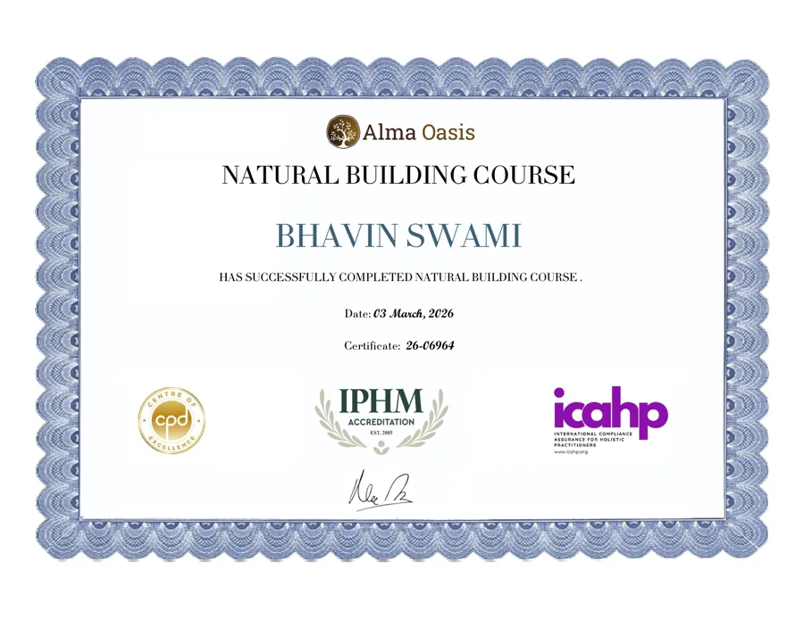
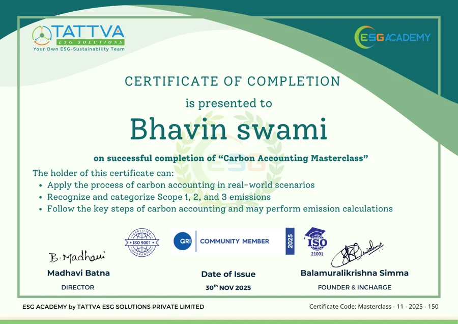
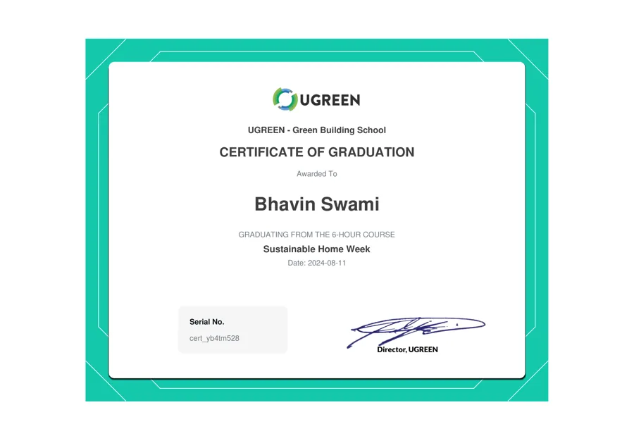
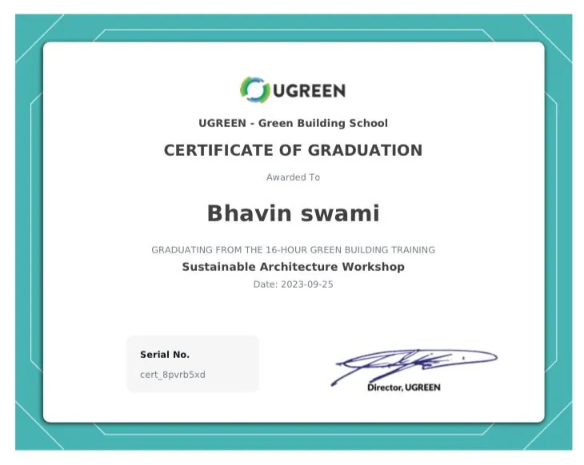
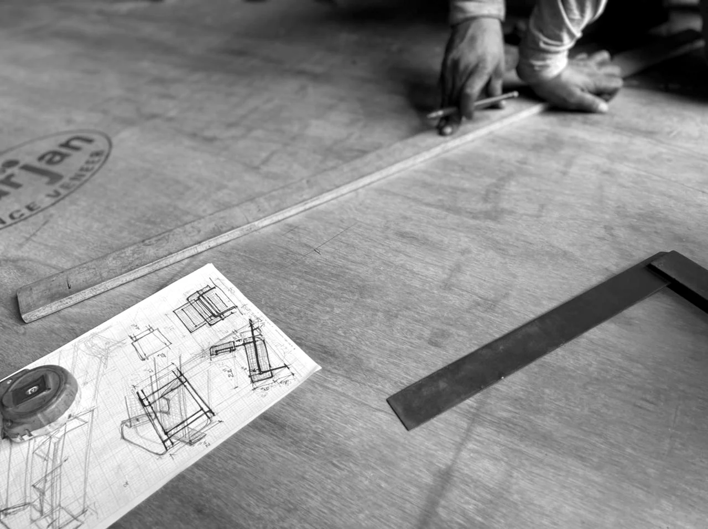

Designing since 1995, a way of seeing, before it is a way of building.
The founder's journey
The passion for designing started during college, learning by balancing education with real site work, days on projects and nights on assignments.
Real-world experience became the biggest teacher. Every project strengthened both knowledge and confidence, and taught a simple lesson that still guides the studio: success comes from continuous learning and practical experience.
My journey has been shaped by over three decades of exploring how people truly live in and interact with spaces. Early on I realised that design is not just about aesthetics but about creating experiences, a philosophy that blends functionality, sustainability and timeless elegance, so every project enhances both lifestyle and well-being.
What I believe
It does not announce itself. It earns its place through proportion, light and material, through the patience to resolve the unseen details, and the discipline to leave out everything that isn't needed.
I begin by understanding the aspirations of the client and the cultural context of the project, then distil those insights into spatial experiences, natural light, proportion, texture and materiality, that engage the senses. The concept comes alive when architecture responds to human emotion, not just physical needs.
A few things stay non-negotiable. A home should breathe, so natural light, generous proportions and the honest use of materials like stone, wood and glass are where every project begins, and where timelessness is earned.
Three words, in the end: timeless, experiential, refined.
Where I work
Continued learning
An ongoing commitment to sustainable, responsible building, kept current through green-building and ESG training.





The founder's portfolio
From the first pencil sketch to the finished joint, a personal archive of the founder's projects and craft.
View the portfolio